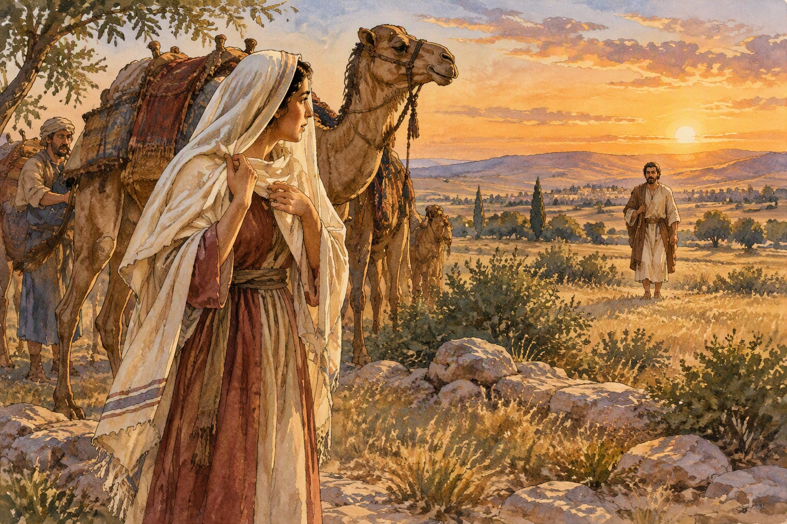

וַיִּהְיוּ֙ חַיֵּ֣י שָׂרָ֔ה מֵאָ֥ה שָׁנָ֛ה וְעֶשְׂרִ֥ים שָׁנָ֖ה וְשֶׁ֣בַע שָׁנִ֑ים שְׁנֵ֖י חַיֵּ֥י שָׂרָֽה׃
ויהיו חיי שרה מאה שנה ועשרים שנה ושבע שנים שני חיי שרה׃
La vie de Sara fut de cent vingt-sept ans; telle fut la durée de sa vie.
וַתָּ֣מׇת שָׂרָ֗ה בְּקִרְיַ֥ת אַרְבַּ֛ע הִ֥וא חֶבְר֖וֹן בְּאֶ֣רֶץ כְּנָ֑עַן וַיָּבֹא֙ אַבְרָהָ֔ם לִסְפֹּ֥ד לְשָׂרָ֖ה וְלִבְכֹּתָֽהּ׃
ותמת שרה בקרית ארבע הוא חברון בארץ כנען ויבא אברהם לספד לשרה ולבכתה׃
Sara mourut à Kiryath-Arba, qui est Hébron, dans le pays de Canaan; Abraham y vint pour dire sur Sara les paroles funèbres et pour la pleurer.
וַיָּ֙קׇם֙ אַבְרָהָ֔ם מֵעַ֖ל פְּנֵ֣י מֵת֑וֹ וַיְדַבֵּ֥ר אֶל־בְּנֵי־חֵ֖ת לֵאמֹֽר׃
ויקם אברהם מעל פני מתו וידבר אל־בני־חת לאמר׃
Abraham, ayant rendu ce devoir à son mort alla parler aux enfants de Heth en ces termes:
גֵּר־וְתוֹשָׁ֥ב אָנֹכִ֖י עִמָּכֶ֑ם תְּנ֨וּ לִ֤י אֲחֻזַּת־קֶ֙בֶר֙ עִמָּכֶ֔ם וְאֶקְבְּרָ֥ה מֵתִ֖י מִלְּפָנָֽי׃
גר־ותושב אנכי עמכם תנו לי אחזת־קבר עמכם ואקברה מתי מלפני׃
"Je ne suis qu’un étranger domicilié parmi vous: accordez-moi la propriété d’une sépulture au milieu de vous, que j’ensevelisse ce mort qui est devant moi."
וַיַּעֲנ֧וּ בְנֵי־חֵ֛ת אֶת־אַבְרָהָ֖ם לֵאמֹ֥ר לֽוֹ׃
ויענו בני־חת את־אברהם לאמר לו׃
Les enfants de Heth répondirent à Abraham en lui disant:
שְׁמָעֵ֣נוּ ׀ אֲדֹנִ֗י נְשִׂ֨יא אֱלֹהִ֤ים אַתָּה֙ בְּתוֹכֵ֔נוּ בְּמִבְחַ֣ר קְבָרֵ֔ינוּ קְבֹ֖ר אֶת־מֵתֶ֑ךָ אִ֣ישׁ מִמֶּ֔נּוּ אֶת־קִבְר֛וֹ לֹֽא־יִכְלֶ֥ה מִמְּךָ֖ מִקְּבֹ֥ר מֵתֶֽךָ׃
שמענו ׀ אדני נשיא אלהים אתה בתוכנו במבחר קברינו קבר את־מתך איש ממנו את־קברו לא־יכלה ממך מקבר מתך׃
"Écoute-nous, seigneur! Tu es un dignitaire de Dieu au milieu de nous, dans la meilleure de nos tombes ensevelis ton mort. Nul d’entre nous ne te refusera sa tombe pour inhumer ton mort."
וַיָּ֧קׇם אַבְרָהָ֛ם וַיִּשְׁתַּ֥חוּ לְעַם־הָאָ֖רֶץ לִבְנֵי־חֵֽת׃
ויקם אברהם וישתחו לעם־הארץ לבני־חת׃
Abraham s’avança et se prosterna devant le peuple du pays, devant les enfants de Heth,
וַיְדַבֵּ֥ר אִתָּ֖ם לֵאמֹ֑ר אִם־יֵ֣שׁ אֶֽת־נַפְשְׁכֶ֗ם לִקְבֹּ֤ר אֶת־מֵתִי֙ מִלְּפָנַ֔י שְׁמָע֕וּנִי וּפִגְעוּ־לִ֖י בְּעֶפְר֥וֹן בֶּן־צֹֽחַר׃
וידבר אתם לאמר אם־יש את־נפשכם לקבר את־מתי מלפני שמעוני ופגעו־לי בעפרון בן־צחר׃
et il leur parla ainsi: "Si vous trouvez bon que j’ensevelisse ce mort qui est devant moi, écoutez-moi: priez en ma faveur Éfron, fils de Cohar,
וְיִתֶּן־לִ֗י אֶת־מְעָרַ֤ת הַמַּכְפֵּלָה֙ אֲשֶׁר־ל֔וֹ אֲשֶׁ֖ר בִּקְצֵ֣ה שָׂדֵ֑הוּ בְּכֶ֨סֶף מָלֵ֜א יִתְּנֶ֥נָּה לִּ֛י בְּתוֹכְכֶ֖ם לַאֲחֻזַּת־קָֽבֶר׃
ויתן־לי את־מערת המכפלה אשר־לו אשר בקצה שדהו בכסף מלא יתננה לי בתוככם לאחזת־קבר׃
pour qu’il me cède le caveau de Makpéla qui est à lui, qui se trouve au bout de son champ; qu’il me le cède pour argent comptant, comme propriété tumulaire au milieu de vous."
וְעֶפְר֥וֹן יֹשֵׁ֖ב בְּת֣וֹךְ בְּנֵי־חֵ֑ת וַיַּ֩עַן֩ עֶפְר֨וֹן הַחִתִּ֤י אֶת־אַבְרָהָם֙ בְּאׇזְנֵ֣י בְנֵי־חֵ֔ת לְכֹ֛ל בָּאֵ֥י שַֽׁעַר־עִיר֖וֹ לֵאמֹֽר׃
ועפרון ישב בתוך בני־חת ויען עפרון החתי את־אברהם באזני בני־חת לכל באי שער־עירו לאמר׃
Éfron siégeait parmi les enfants de Heth. Éfron le Héthéen répondit à Abraham en présence des enfants de Heth, de tous ceux qui étaient venus à la porte de sa ville et dit:
לֹֽא־אֲדֹנִ֣י שְׁמָעֵ֔נִי הַשָּׂדֶה֙ נָתַ֣תִּי לָ֔ךְ וְהַמְּעָרָ֥ה אֲשֶׁר־בּ֖וֹ לְךָ֣ נְתַתִּ֑יהָ לְעֵינֵ֧י בְנֵי־עַמִּ֛י נְתַתִּ֥יהָ לָּ֖ךְ קְבֹ֥ר מֵתֶֽךָ׃
לא־אדני שמעני השדה נתתי לך והמערה אשר־בו לך נתתיה לעיני בני־עמי נתתיה לך קבר מתך׃
"Non, seigneur, écoute-moi, le champ, je te le donne; le caveau qui s’y trouve, je te le donne également; à la face de mes concitoyens je t’en fais don, ensevelis ton mort."
וַיִּשְׁתַּ֙חוּ֙ אַבְרָהָ֔ם לִפְנֵ֖י עַ֥ם הָאָֽרֶץ׃
וישתחו אברהם לפני עם הארץ׃
Abraham se prosterna devant le peuple du pays
וַיְדַבֵּ֨ר אֶל־עֶפְר֜וֹן בְּאׇזְנֵ֤י עַם־הָאָ֙רֶץ֙ לֵאמֹ֔ר אַ֛ךְ אִם־אַתָּ֥ה ל֖וּ שְׁמָעֵ֑נִי נָתַ֜תִּי כֶּ֤סֶף הַשָּׂדֶה֙ קַ֣ח מִמֶּ֔נִּי וְאֶקְבְּרָ֥ה אֶת־מֵתִ֖י שָֽׁמָּה׃
וידבר אל־עפרון באזני עם־הארץ לאמר אך אם־אתה לו שמעני נתתי כסף השדה קח ממני ואקברה את־מתי שמה׃
et parla ainsi à Éfron en présence du peuple du pays: "Ah! s’il te plaît, écoute-moi: j’offre le prix de ce champ, accepte-le, que j’y puisse enterrer mon mort."
וַיַּ֧עַן עֶפְר֛וֹן אֶת־אַבְרָהָ֖ם לֵאמֹ֥ר לֽוֹ׃
ויען עפרון את־אברהם לאמר לו׃
Éfron répondit à Abraham en lui disant:
אֲדֹנִ֣י שְׁמָעֵ֔נִי אֶ֩רֶץ֩ אַרְבַּ֨ע מֵאֹ֧ת שֶֽׁקֶל־כֶּ֛סֶף בֵּינִ֥י וּבֵֽינְךָ֖ מַה־הִ֑וא וְאֶת־מֵתְךָ֖ קְבֹֽר׃
אדני שמעני ארץ ארבע מאת שקל־כסף ביני ובינך מה־הוא ואת־מתך קבר׃
"Seigneur, écoute-moi: une terre de quatre cents sicles d’argent, qu’est-ce que cela entre nous deux? Enterres-y ton mort."
וַיִּשְׁמַ֣ע אַבְרָהָם֮ אֶל־עֶפְרוֹן֒ וַיִּשְׁקֹ֤ל אַבְרָהָם֙ לְעֶפְרֹ֔ן אֶת־הַכֶּ֕סֶף אֲשֶׁ֥ר דִּבֶּ֖ר בְּאׇזְנֵ֣י בְנֵי־חֵ֑ת אַרְבַּ֤ע מֵאוֹת֙ שֶׁ֣קֶל כֶּ֔סֶף עֹבֵ֖ר לַסֹּחֵֽר׃
וישמע אברהם אל־עפרון וישקל אברהם לעפרן את־הכסף אשר דבר באזני בני־חת ארבע מאות שקל כסף עבר לסחר׃
Abraham écouta Éfron et lui compta le prix qu’il avait énoncé en présence des enfants de Heth: quatre cents sicles d’argent, en monnaie courante.
וַיָּ֣קׇם ׀ שְׂדֵ֣ה עֶפְר֗וֹן אֲשֶׁר֙ בַּמַּכְפֵּלָ֔ה אֲשֶׁ֖ר לִפְנֵ֣י מַמְרֵ֑א הַשָּׂדֶה֙ וְהַמְּעָרָ֣ה אֲשֶׁר־בּ֔וֹ וְכׇל־הָעֵץ֙ אֲשֶׁ֣ר בַּשָּׂדֶ֔ה אֲשֶׁ֥ר בְּכׇל־גְּבֻל֖וֹ סָבִֽיב׃
ויקם ׀ שדה עפרון אשר במכפלה אשר לפני ממרא השדה והמערה אשר־בו וכל־העץ אשר בשדה אשר בכל־גבלו סביב׃
Ainsi fut dévolu le champ d’Éfron situé à Makpéla, en face de Mamré; ce champ, avec son caveau, avec les arbres qui le couvraient dans toute son étendue à la ronde,
לְאַבְרָהָ֥ם לְמִקְנָ֖ה לְעֵינֵ֣י בְנֵי־חֵ֑ת בְּכֹ֖ל בָּאֵ֥י שַֽׁעַר־עִירֽוֹ׃
לאברהם למקנה לעיני בני־חת בכל באי שער־עירו׃
à Abraham, comme acquisition, en présence des enfants de Heth, de tous ceux qui étaient venus à la porte de la ville.
וְאַחֲרֵי־כֵן֩ קָבַ֨ר אַבְרָהָ֜ם אֶת־שָׂרָ֣ה אִשְׁתּ֗וֹ אֶל־מְעָרַ֞ת שְׂדֵ֧ה הַמַּכְפֵּלָ֛ה עַל־פְּנֵ֥י מַמְרֵ֖א הִ֣וא חֶבְר֑וֹן בְּאֶ֖רֶץ כְּנָֽעַן׃
ואחרי־כן קבר אברהם את־שרה אשתו אל־מערת שדה המכפלה על־פני ממרא הוא חברון בארץ כנען׃
Alors Abraham ensevelit Sara, son épouse, dans le caveau du champ de Makpéla, en face de Mamré, qui est Hébron, dans le pays de Canaan.
וַיָּ֨קׇם הַשָּׂדֶ֜ה וְהַמְּעָרָ֧ה אֲשֶׁר־בּ֛וֹ לְאַבְרָהָ֖ם לַאֲחֻזַּת־קָ֑בֶר מֵאֵ֖ת בְּנֵי־חֵֽת׃ {ס}
ויקם השדה והמערה אשר־בו לאברהם לאחזת־קבר מאת בני־חת׃ {ס}
Le champ, avec le caveau qui s’y trouve, fut ainsi adjugé à Abraham, comme possession tumulaire, par les enfants de Heth.
וְאַבְרָהָ֣ם זָקֵ֔ן בָּ֖א בַּיָּמִ֑ים וַֽיהֹוָ֛ה בֵּרַ֥ךְ אֶת־אַבְרָהָ֖ם בַּכֹּֽל׃
ואברהם זקן בא בימים ויהוה ברך את־אברהם בכל׃
Or Abraham était vieux, avancé dans la vie; et l’Éternel avait béni Abraham en toutes choses.
וַיֹּ֣אמֶר אַבְרָהָ֗ם אֶל־עַבְדּוֹ֙ זְקַ֣ן בֵּית֔וֹ הַמֹּשֵׁ֖ל בְּכׇל־אֲשֶׁר־ל֑וֹ שִֽׂים־נָ֥א יָדְךָ֖ תַּ֥חַת יְרֵכִֽי׃
ויאמר אברהם אל־עבדו זקן ביתו המשל בכל־אשר־לו שים־נא ידך תחת ירכי׃
Abraham dit au serviteur le plus ancien de sa maison, qui avait le gouvernement de tous ses biens: "Mets, je te prie, ta main sous ma hanche,
וְאַשְׁבִּ֣יעֲךָ֔ בַּֽיהֹוָה֙ אֱלֹהֵ֣י הַשָּׁמַ֔יִם וֵֽאלֹהֵ֖י הָאָ֑רֶץ אֲשֶׁ֨ר לֹֽא־תִקַּ֤ח אִשָּׁה֙ לִבְנִ֔י מִבְּנוֹת֙ הַֽכְּנַעֲנִ֔י אֲשֶׁ֥ר אָנֹכִ֖י יוֹשֵׁ֥ב בְּקִרְבּֽוֹ׃
ואשביעך ביהוה אלהי השמים ואלהי הארץ אשר לא־תקח אשה לבני מבנות הכנעני אשר אנכי יושב בקרבו׃
pour que je t’adjure par l’Éternel, Dieu du ciel et de la terre, de ne pas choisir une épouse à mon fils parmi les filles des Cananéens avec lesquels je demeure,
כִּ֧י אֶל־אַרְצִ֛י וְאֶל־מוֹלַדְתִּ֖י תֵּלֵ֑ךְ וְלָקַחְתָּ֥ אִשָּׁ֖ה לִבְנִ֥י לְיִצְחָֽק׃
כי אל־ארצי ואל־מולדתי תלך ולקחת אשה לבני ליצחק׃
mais bien d’aller dans mon pays et dans mon lieu natal chercher une épouse à mon fils, à Isaac."
וַיֹּ֤אמֶר אֵלָיו֙ הָעֶ֔בֶד אוּלַי֙ לֹא־תֹאבֶ֣ה הָֽאִשָּׁ֔ה לָלֶ֥כֶת אַחֲרַ֖י אֶל־הָאָ֣רֶץ הַזֹּ֑את הֶֽהָשֵׁ֤ב אָשִׁיב֙ אֶת־בִּנְךָ֔ אֶל־הָאָ֖רֶץ אֲשֶׁר־יָצָ֥אתָ מִשָּֽׁם׃
ויאמר אליו העבד אולי לא־תאבה האשה ללכת אחרי אל־הארץ הזאת ההשב אשיב את־בנך אל־הארץ אשר־יצאת משם׃
Le serviteur lui dit: "peut-être cette femme ne voudra-t-elle pas me suivre dans ce pays-ci: devrai-je ramener ton fils dans le pays que tu as quitté?"
וַיֹּ֥אמֶר אֵלָ֖יו אַבְרָהָ֑ם הִשָּׁ֣מֶר לְךָ֔ פֶּן־תָּשִׁ֥יב אֶת־בְּנִ֖י שָֽׁמָּה׃
ויאמר אליו אברהם השמר לך פן־תשיב את־בני שמה׃
Abraham lui répondit: "Garde toi d’y ramener mon fils!
יְהֹוָ֣ה ׀ אֱלֹהֵ֣י הַשָּׁמַ֗יִם אֲשֶׁ֨ר לְקָחַ֜נִי מִבֵּ֣ית אָבִי֮ וּמֵאֶ֣רֶץ מֽוֹלַדְתִּי֒ וַאֲשֶׁ֨ר דִּבֶּר־לִ֜י וַאֲשֶׁ֤ר נִֽשְׁבַּֽע־לִי֙ לֵאמֹ֔ר לְזַ֨רְעֲךָ֔ אֶתֵּ֖ן אֶת־הָאָ֣רֶץ הַזֹּ֑את ה֗וּא יִשְׁלַ֤ח מַלְאָכוֹ֙ לְפָנֶ֔יךָ וְלָקַחְתָּ֥ אִשָּׁ֛ה לִבְנִ֖י מִשָּֽׁם׃
יהוה ׀ אלהי השמים אשר לקחני מבית אבי ומארץ מולדתי ואשר דבר־לי ואשר נשבע־לי לאמר לזרעך אתן את־הארץ הזאת הוא ישלח מלאכו לפניך ולקחת אשה לבני משם׃
L’Éternel, le Dieu des cieux, qui m’a retiré de la maison de mon père et du pays de ma naissance; qui m’a promis, qui m’a juré en disant: "Je donnerai cette terre-ci à ta race", lui, il te fera précéder par son envoyé et tu prendras là-bas une femme pour mon fils.
וְאִם־לֹ֨א תֹאבֶ֤ה הָֽאִשָּׁה֙ לָלֶ֣כֶת אַחֲרֶ֔יךָ וְנִקִּ֕יתָ מִשְּׁבֻעָתִ֖י זֹ֑את רַ֣ק אֶת־בְּנִ֔י לֹ֥א תָשֵׁ֖ב שָֽׁמָּה׃
ואם־לא תאבה האשה ללכת אחריך ונקית משבעתי זאת רק את־בני לא תשב שמה׃
Que si cette femme ne consent pas à te suivre, tu seras dégagé du serment que je t’impose. Mais en aucune façon n’y ramène mon fils."
וַיָּ֤שֶׂם הָעֶ֙בֶד֙ אֶת־יָד֔וֹ תַּ֛חַת יֶ֥רֶךְ אַבְרָהָ֖ם אֲדֹנָ֑יו וַיִּשָּׁ֣בַֽע ל֔וֹ עַל־הַדָּבָ֖ר הַזֶּֽה׃
וישם העבד את־ידו תחת ירך אברהם אדניו וישבע לו על־הדבר הזה׃
Le serviteur posa sa main sous la hanche d’Abraham, son maître et lui prêta serment à ce sujet.
וַיִּקַּ֣ח הָ֠עֶ֠בֶד עֲשָׂרָ֨ה גְמַלִּ֜ים מִגְּמַלֵּ֤י אֲדֹנָיו֙ וַיֵּ֔לֶךְ וְכׇל־ט֥וּב אֲדֹנָ֖יו בְּיָד֑וֹ וַיָּ֗קׇם וַיֵּ֛לֶךְ אֶל־אֲרַ֥ם נַֽהֲרַ֖יִם אֶל־עִ֥יר נָחֽוֹר׃
ויקח העבד עשרה גמלים מגמלי אדניו וילך וכל־טוב אדניו בידו ויקם וילך אל־ארם נהרים אל־עיר נחור׃
Le serviteur prit dix chameaux parmi les chameaux de son maître et partit, chargé de ce que son maître avait de meilleur. Il s’achemina vers Aram Double Fleuve, du côté de la ville de Nahor.
וַיַּבְרֵ֧ךְ הַגְּמַלִּ֛ים מִח֥וּץ לָעִ֖יר אֶל־בְּאֵ֣ר הַמָּ֑יִם לְעֵ֣ת עֶ֔רֶב לְעֵ֖ת צֵ֥את הַשֹּׁאֲבֹֽת׃
ויברך הגמלים מחוץ לעיר אל־באר המים לעת ערב לעת צאת השאבת׃
Il fit reposer les chameaux hors de la ville, près de la fontaine; c’était vers le soir, au temps où les femmes viennent puiser de l’eau.
וַיֹּאמַ֓ר ׀ יְהֹוָ֗ה אֱלֹהֵי֙ אֲדֹנִ֣י אַבְרָהָ֔ם הַקְרֵה־נָ֥א לְפָנַ֖י הַיּ֑וֹם וַעֲשֵׂה־חֶ֕סֶד עִ֖ם אֲדֹנִ֥י אַבְרָהָֽם׃
ויאמר ׀ יהוה אלהי אדני אברהם הקרה־נא לפני היום ועשה־חסד עם אדני אברהם׃
Et il dit: "Seigneur, Dieu de mon maître Abraham! daigne me procurer aujourd’hui une rencontre et sois favorable à mon maître Abraham.
הִנֵּ֛ה אָנֹכִ֥י נִצָּ֖ב עַל־עֵ֣ין הַמָּ֑יִם וּבְנוֹת֙ אַנְשֵׁ֣י הָעִ֔יר יֹצְאֹ֖ת לִשְׁאֹ֥ב מָֽיִם׃
הנה אנכי נצב על־עין המים ובנות אנשי העיר יצאת לשאב מים׃
Voici, je me trouve au bord de la fontaine et les filles des habitants de la ville sortent pour puiser de l’eau.
וְהָיָ֣ה הַֽנַּעֲרָ֗ אֲשֶׁ֨ר אֹמַ֤ר אֵלֶ֙יהָ֙ הַטִּי־נָ֤א כַדֵּךְ֙ וְאֶשְׁתֶּ֔ה וְאָמְרָ֣ה שְׁתֵ֔ה וְגַם־גְּמַלֶּ֖יךָ אַשְׁקֶ֑ה אֹתָ֤הּ הֹכַ֙חְתָּ֙ לְעַבְדְּךָ֣ לְיִצְחָ֔ק וּבָ֣הּ אֵדַ֔ע כִּי־עָשִׂ֥יתָ חֶ֖סֶד עִם־אֲדֹנִֽי׃
והיה הנער אשר אמר אליה הטי־נא כדך ואשתה ואמרה שתה וגם־גמליך אשקה אתה הכחת לעבדך ליצחק ובה אדע כי־עשית חסד עם־אדני׃
Eh bien! la jeune fille à qui je dirai: ‘Veuille pencher ta cruche, que je boive’ et qui répondra: ‘Bois, puis je ferai boire aussi tes chameaux’, puisses-tu l’avoir destinée à ton serviteur Isaac et puissé-je reconnaître par elle que tu t’es montré favorable à mon maître!"
וַֽיְהִי־ה֗וּא טֶ֘רֶם֮ כִּלָּ֣ה לְדַבֵּר֒ וְהִנֵּ֧ה רִבְקָ֣ה יֹצֵ֗את אֲשֶׁ֤ר יֻלְּדָה֙ לִבְתוּאֵ֣ל בֶּן־מִלְכָּ֔ה אֵ֥שֶׁת נָח֖וֹר אֲחִ֣י אַבְרָהָ֑ם וְכַדָּ֖הּ עַל־שִׁכְמָֽהּ׃
ויהי־הוא טרם כלה לדבר והנה רבקה יצאת אשר ילדה לבתואל בן־מלכה אשת נחור אחי אברהם וכדה על־שכמה׃
Il n’avait pas encore fini de parler, que voici venir Rébecca, la fille de Bathuel, fils de Milka, épouse de Nahor, frère d’Abraham, sa cruche sur l’épaule.
וְהַֽנַּעֲרָ֗ טֹבַ֤ת מַרְאֶה֙ מְאֹ֔ד בְּתוּלָ֕ה וְאִ֖ישׁ לֹ֣א יְדָעָ֑הּ וַתֵּ֣רֶד הָעַ֔יְנָה וַתְּמַלֵּ֥א כַדָּ֖הּ וַתָּֽעַל׃
והנער טבת מראה מאד בתולה ואיש לא ידעה ותרד העינה ותמלא כדה ותעל׃
Cette jeune fille était extrêmement belle; vierge, nul homme n’avait encore approché d’elle. Elle descendit à la fontaine, emplit sa cruche et remonta.
וַיָּ֥רׇץ הָעֶ֖בֶד לִקְרָאתָ֑הּ וַיֹּ֕אמֶר הַגְמִיאִ֥ינִי נָ֛א מְעַט־מַ֖יִם מִכַּדֵּֽךְ׃
וירץ העבד לקראתה ויאמר הגמיאיני נא מעט־מים מכדך׃
Le serviteur courut au-devant d’elle et dit: "Laisse-moi boire, s’il te plaît, un peu d’eau à ta cruche."
וַתֹּ֖אמֶר שְׁתֵ֣ה אֲדֹנִ֑י וַתְּמַהֵ֗ר וַתֹּ֧רֶד כַּדָּ֛הּ עַל־יָדָ֖הּ וַתַּשְׁקֵֽהוּ׃
ותאמר שתה אדני ותמהר ותרד כדה על־ידה ותשקהו׃
Elle répondit: "Bois, seigneur." Et vite elle fit glisser sa cruche jusqu’à sa main et elle lui donna à boire.
וַתְּכַ֖ל לְהַשְׁקֹת֑וֹ וַתֹּ֗אמֶר גַּ֤ם לִגְמַלֶּ֙יךָ֙ אֶשְׁאָ֔ב עַ֥ד אִם־כִּלּ֖וּ לִשְׁתֹּֽת׃
ותכל להשקתו ותאמר גם לגמליך אשאב עד אם־כלו לשתת׃
Après lui avoir donné à boire, elle dit: "Pour tes chameaux aussi je veux puiser de l’eau, jusqu’à ce qu’ils aient tous bu."
וַתְּמַהֵ֗ר וַתְּעַ֤ר כַּדָּהּ֙ אֶל־הַשֹּׁ֔קֶת וַתָּ֥רׇץ ע֛וֹד אֶֽל־הַבְּאֵ֖ר לִשְׁאֹ֑ב וַתִּשְׁאַ֖ב לְכׇל־גְּמַלָּֽיו׃
ותמהר ותער כדה אל־השקת ותרץ עוד אל־הבאר לשאב ותשאב לכל־גמליו׃
Et elle se hâta de vider sa cruche dans l’abreuvoir, courut de nouveau à la fontaine pour puiser et puisa ainsi pour tous les chameaux.
וְהָאִ֥ישׁ מִשְׁתָּאֵ֖ה לָ֑הּ מַחֲרִ֕ישׁ לָדַ֗עַת הַֽהִצְלִ֧יחַ יְהֹוָ֛ה דַּרְכּ֖וֹ אִם־לֹֽא׃
והאיש משתאה לה מחריש לדעת ההצליח יהוה דרכו אם־לא׃
Et cet homme, émerveillé, la considérait en silence, désireux de savoir si l’Éternel avait béni son voyage ou non.
וַיְהִ֗י כַּאֲשֶׁ֨ר כִּלּ֤וּ הַגְּמַלִּים֙ לִשְׁתּ֔וֹת וַיִּקַּ֤ח הָאִישׁ֙ נֶ֣זֶם זָהָ֔ב בֶּ֖קַע מִשְׁקָל֑וֹ וּשְׁנֵ֤י צְמִידִים֙ עַל־יָדֶ֔יהָ עֲשָׂרָ֥ה זָהָ֖ב מִשְׁקָלָֽם׃
ויהי כאשר כלו הגמלים לשתות ויקח האיש נזם זהב בקע משקלו ושני צמידים על־ידיה עשרה זהב משקלם׃
Lorsque les chameaux eurent fini de boire, cet homme prit une boucle en or, du poids d’un béka et deux bracelets pour ses bras, du poids de dix sicles d’or;
וַיֹּ֙אמֶר֙ בַּת־מִ֣י אַ֔תְּ הַגִּ֥ידִי נָ֖א לִ֑י הֲיֵ֧שׁ בֵּית־אָבִ֛יךְ מָק֥וֹם לָ֖נוּ לָלִֽין׃
ויאמר בת־מי את הגידי נא לי היש בית־אביך מקום לנו ללין׃
et il dit: "De qui es-tu fille? daigne me l’apprendre. Y a-t-il dans la maison de ton père de la place pour nous loger?"
וַתֹּ֣אמֶר אֵלָ֔יו בַּת־בְּתוּאֵ֖ל אָנֹ֑כִי בֶּן־מִלְכָּ֕ה אֲשֶׁ֥ר יָלְדָ֖ה לְנָחֽוֹר׃
ותאמר אליו בת־בתואל אנכי בן־מלכה אשר ילדה לנחור׃
Elle lui répondit: "Je suis la fille de Bathuel, fils de Milka, qui l’a enfanté à Nahor;"
וַתֹּ֣אמֶר אֵלָ֔יו גַּם־תֶּ֥בֶן גַּם־מִסְפּ֖וֹא רַ֣ב עִמָּ֑נוּ גַּם־מָק֖וֹם לָלֽוּן׃
ותאמר אליו גם־תבן גם־מספוא רב עמנו גם־מקום ללון׃
Elle lui dit encore: "Il y a chez nous de la paille et du fourrage en abondance et de la place pour loger."
וַיִּקֹּ֣ד הָאִ֔ישׁ וַיִּשְׁתַּ֖חוּ לַֽיהֹוָֽה׃
ויקד האיש וישתחו ליהוה׃
L’homme s’inclina et se prosterna devant l’Éternel
וַיֹּ֗אמֶר בָּר֤וּךְ יְהֹוָה֙ אֱלֹהֵי֙ אֲדֹנִ֣י אַבְרָהָ֔ם אֲ֠שֶׁ֠ר לֹֽא־עָזַ֥ב חַסְדּ֛וֹ וַאֲמִתּ֖וֹ מֵעִ֣ם אֲדֹנִ֑י אָנֹכִ֗י בַּדֶּ֙רֶךְ֙ נָחַ֣נִי יְהֹוָ֔ה בֵּ֖ית אֲחֵ֥י אֲדֹנִֽי׃
ויאמר ברוך יהוה אלהי אדני אברהם אשר לא־עזב חסדו ואמתו מעם אדני אנכי בדרך נחני יהוה בית אחי אדני׃
et Il dit: "Beni soit l’Éternel, Dieu de mon maître Abraham, qui n’a pas retiré sa faveur et sa fidélité à mon maître!"
וַתָּ֙רׇץ֙ הַֽנַּעֲרָ֔ וַתַּגֵּ֖ד לְבֵ֣ית אִמָּ֑הּ כַּדְּבָרִ֖ים הָאֵֽלֶּה׃
ותרץ הנער ותגד לבית אמה כדברים האלה׃
La jeune fille courut dans la chambre de sa mère et raconta ces choses.
וּלְרִבְקָ֥ה אָ֖ח וּשְׁמ֣וֹ לָבָ֑ן וַיָּ֨רׇץ לָבָ֧ן אֶל־הָאִ֛ישׁ הַח֖וּצָה אֶל־הָעָֽיִן׃
ולרבקה אח ושמו לבן וירץ לבן אל־האיש החוצה אל־העין׃
Or, Rébecca avait un frère nommé Laban. Laban accourut auprès de l’homme qui se tenait dehors, près de la fontaine.
וַיְהִ֣י ׀ כִּרְאֹ֣ת אֶת־הַנֶּ֗זֶם וְֽאֶת־הַצְּמִדִים֮ עַל־יְדֵ֣י אֲחֹתוֹ֒ וּכְשׇׁמְע֗וֹ אֶת־דִּבְרֵ֞י רִבְקָ֤ה אֲחֹתוֹ֙ לֵאמֹ֔ר כֹּֽה־דִבֶּ֥ר אֵלַ֖י הָאִ֑ישׁ וַיָּבֹא֙ אֶל־הָאִ֔ישׁ וְהִנֵּ֛ה עֹמֵ֥ד עַל־הַגְּמַלִּ֖ים עַל־הָעָֽיִן׃
ויהי ׀ כראת את־הנזם ואת־הצמדים על־ידי אחתו וכשמעו את־דברי רבקה אחתו לאמר כה־דבר אלי האיש ויבא אל־האיש והנה עמד על־הגמלים על־העין׃
Lorsqu’il vit la boucle et les bracelets aux bras de sa sœur; lorsqu’il entendit sa sœur Rébecca dire: "Ainsi m’a parlé cet homme", il était allé vers lui. Celui-ci attendait près des chameaux, au bord de la fontaine.
וַיֹּ֕אמֶר בּ֖וֹא בְּר֣וּךְ יְהֹוָ֑ה לָ֤מָּה תַעֲמֹד֙ בַּח֔וּץ וְאָנֹכִי֙ פִּנִּ֣יתִי הַבַּ֔יִת וּמָק֖וֹם לַגְּמַלִּֽים׃
ויאמר בוא ברוך יהוה למה תעמד בחוץ ואנכי פניתי הבית ומקום לגמלים׃
Laban lui dit: "Viens, bien-aimé du Seigneur! pourquoi restes-tu dehors, lorsque j’ai préparé la maison et qu’il y a place pour les chameaux?"
וַיָּבֹ֤א הָאִישׁ֙ הַבַּ֔יְתָה וַיְפַתַּ֖ח הַגְּמַלִּ֑ים וַיִּתֵּ֨ן תֶּ֤בֶן וּמִסְפּוֹא֙ לַגְּמַלִּ֔ים וּמַ֙יִם֙ לִרְחֹ֣ץ רַגְלָ֔יו וְרַגְלֵ֥י הָאֲנָשִׁ֖ים אֲשֶׁ֥ר אִתּֽוֹ׃
ויבא האיש הביתה ויפתח הגמלים ויתן תבן ומספוא לגמלים ומים לרחץ רגליו ורגלי האנשים אשר אתו׃
L’homme entra dans la maison et déchargea les chameaux; on apporta de la paille et du fourrage pour les chameaux et de l’eau pour laver ses pieds et les pieds des hommes qui l’accompagnaient.
(ויישם) [וַיּוּשַׂ֤ם] לְפָנָיו֙ לֶאֱכֹ֔ל וַיֹּ֙אמֶר֙ לֹ֣א אֹכַ֔ל עַ֥ד אִם־דִּבַּ֖רְתִּי דְּבָרָ֑י וַיֹּ֖אמֶר דַּבֵּֽר׃
(ויישם) [ויושם] לפניו לאכל ויאמר לא אכל עד אם־דברתי דברי ויאמר דבר׃
On lui servit à manger; mais il dit: "Je ne mangerai point, que je n’aie dit ce que j’ai à dire." On lui répondit: "Parle."
וַיֹּאמַ֑ר עֶ֥בֶד אַבְרָהָ֖ם אָנֹֽכִי׃
ויאמר עבד אברהם אנכי׃
Et il dit: "Je suis le serviteur d’Abraham.
וַיהֹוָ֞ה בֵּרַ֧ךְ אֶת־אֲדֹנִ֛י מְאֹ֖ד וַיִּגְדָּ֑ל וַיִּתֶּן־ל֞וֹ צֹ֤אן וּבָקָר֙ וְכֶ֣סֶף וְזָהָ֔ב וַעֲבָדִם֙ וּשְׁפָחֹ֔ת וּגְמַלִּ֖ים וַחֲמֹרִֽים׃
ויהוה ברך את־אדני מאד ויגדל ויתן־לו צאן ובקר וכסף וזהב ועבדם ושפחת וגמלים וחמרים׃
L’Éternel a béni grandement mon maître, de sorte qu’il est devenu puissant: il lui a accordé menu et gros bétail, argent et or, esclaves mâles et femelles, chameaux et ânes.
וַתֵּ֡לֶד שָׂרָה֩ אֵ֨שֶׁת אֲדֹנִ֥י בֵן֙ לַֽאדֹנִ֔י אַחֲרֵ֖י זִקְנָתָ֑הּ וַיִּתֶּן־ל֖וֹ אֶת־כׇּל־אֲשֶׁר־לֽוֹ׃
ותלד שרה אשת אדני בן לאדני אחרי זקנתה ויתן־לו את־כל־אשר־לו׃
Sara, l’épouse de mon maître, a enfanté, vieille déjà, un fils à mon maître; celui-ci lui a fait don de tous ses biens.
וַיַּשְׁבִּעֵ֥נִי אֲדֹנִ֖י לֵאמֹ֑ר לֹא־תִקַּ֤ח אִשָּׁה֙ לִבְנִ֔י מִבְּנוֹת֙ הַֽכְּנַעֲנִ֔י אֲשֶׁ֥ר אָנֹכִ֖י יֹשֵׁ֥ב בְּאַרְצֽוֹ׃
וישבעני אדני לאמר לא־תקח אשה לבני מבנות הכנעני אשר אנכי ישב בארצו׃
Or, mon maître m’a adjuré en disant: ‘Tu ne prendras point une épouse à mon fils parmi les filles des Cananéens, dans le pays desquels je réside.
אִם־לֹ֧א אֶל־בֵּית־אָבִ֛י תֵּלֵ֖ךְ וְאֶל־מִשְׁפַּחְתִּ֑י וְלָקַחְתָּ֥ אִשָּׁ֖ה לִבְנִֽי׃
אם־לא אל־בית־אבי תלך ואל־משפחתי ולקחת אשה לבני׃
Non; mais tu iras dans la maison de mon père, dans ma famille et là tu choisiras une épouse à mon fils.’
וָאֹמַ֖ר אֶל־אֲדֹנִ֑י אֻלַ֛י לֹא־תֵלֵ֥ךְ הָאִשָּׁ֖ה אַחֲרָֽי׃
ואמר אל־אדני אלי לא־תלך האשה אחרי׃
Et je dis à mon maître ‘Peut-être cette femme ne me suivra-t-elle pas?’
וַיֹּ֖אמֶר אֵלָ֑י יְהֹוָ֞ה אֲשֶׁר־הִתְהַלַּ֣כְתִּי לְפָנָ֗יו יִשְׁלַ֨ח מַלְאָכ֤וֹ אִתָּךְ֙ וְהִצְלִ֣יחַ דַּרְכֶּ֔ךָ וְלָקַחְתָּ֤ אִשָּׁה֙ לִבְנִ֔י מִמִּשְׁפַּחְתִּ֖י וּמִבֵּ֥ית אָבִֽי׃
ויאמר אלי יהוה אשר־התהלכתי לפניו ישלח מלאכו אתך והצליח דרכך ולקחת אשה לבני ממשפחתי ומבית אבי׃
Il me répondit: ‘L’Éternel, dont j’ai toujours suivi les voies, placera son envoyé à tes côtés et il fera prospérer ton voyage et tu prendras une femme pour mon fils dans ma famille, au foyer de mon père.
אָ֤ז תִּנָּקֶה֙ מֵאָ֣לָתִ֔י כִּ֥י תָב֖וֹא אֶל־מִשְׁפַּחְתִּ֑י וְאִם־לֹ֤א יִתְּנוּ֙ לָ֔ךְ וְהָיִ֥יתָ נָקִ֖י מֵאָלָתִֽי׃
אז תנקה מאלתי כי תבוא אל־משפחתי ואם־לא יתנו לך והיית נקי מאלתי׃
Alors tu seras libéré de mon serment, puisque tu seras allé dans ma famille; pareillement, s’ils te refusent, tu seras libéré de ce serment.’
וָאָבֹ֥א הַיּ֖וֹם אֶל־הָעָ֑יִן וָאֹמַ֗ר יְהֹוָה֙ אֱלֹהֵי֙ אֲדֹנִ֣י אַבְרָהָ֔ם אִם־יֶשְׁךָ־נָּא֙ מַצְלִ֣יחַ דַּרְכִּ֔י אֲשֶׁ֥ר אָנֹכִ֖י הֹלֵ֥ךְ עָלֶֽיהָ׃
ואבא היום אל־העין ואמר יהוה אלהי אדני אברהם אם־ישך־נא מצליח דרכי אשר אנכי הלך עליה׃
Or, aujourd’hui, je suis arrivé près de la fontaine et j’ai dit: ‘Éternel, Dieu de mon maître Abraham! veux-tu, de grâce, faire réussir la voie où je marche?
הִנֵּ֛ה אָנֹכִ֥י נִצָּ֖ב עַל־עֵ֣ין הַמָּ֑יִם וְהָיָ֤ה הָֽעַלְמָה֙ הַיֹּצֵ֣את לִשְׁאֹ֔ב וְאָמַרְתִּ֣י אֵלֶ֔יהָ הַשְׁקִֽינִי־נָ֥א מְעַט־מַ֖יִם מִכַּדֵּֽךְ׃
הנה אנכי נצב על־עין המים והיה העלמה היצאת לשאב ואמרתי אליה השקיני־נא מעט־מים מכדך׃
Eh bien! je suis arrêté au bord de cette fontaine: s’il arrive qu’une jeune fille vienne pour puiser, que je lui dise: ‘Donne moi, je te prie, à boire un peu d’eau de ta cruche’
וְאָמְרָ֤ה אֵלַי֙ גַּם־אַתָּ֣ה שְׁתֵ֔ה וְגַ֥ם לִגְמַלֶּ֖יךָ אֶשְׁאָ֑ב הִ֣וא הָֽאִשָּׁ֔ה אֲשֶׁר־הֹכִ֥יחַ יְהֹוָ֖ה לְבֶן־אֲדֹנִֽי׃
ואמרה אלי גם־אתה שתה וגם לגמליך אשאב הוא האשה אשר־הכיח יהוה לבן־אדני׃
et qu’elle me réponde: ‘Non seulement bois toi-même, mais pour tes chameaux aussi je veux puiser’, que ce soit là la femme que l’Éternel agrée pour le fils de mon maître.
אֲנִי֩ טֶ֨רֶם אֲכַלֶּ֜ה לְדַבֵּ֣ר אֶל־לִבִּ֗י וְהִנֵּ֨ה רִבְקָ֤ה יֹצֵאת֙ וְכַדָּ֣הּ עַל־שִׁכְמָ֔הּ וַתֵּ֥רֶד הָעַ֖יְנָה וַתִּשְׁאָ֑ב וָאֹמַ֥ר אֵלֶ֖יהָ הַשְׁקִ֥ינִי נָֽא׃
אני טרם אכלה לדבר אל־לבי והנה רבקה יצאת וכדה על־שכמה ותרד העינה ותשאב ואמר אליה השקיני נא׃
Je n’avais pas encore achevé de parler en moi-même, voici que Rébecca s’est approchée, sa cruche sur l’épaule; elle est descendue à la fontaine et a puisé et je lui ai dit: ‘Donne-moi, s’il te plait à boire.’
וַתְּמַהֵ֗ר וַתּ֤וֹרֶד כַּדָּהּ֙ מֵֽעָלֶ֔יהָ וַתֹּ֣אמֶר שְׁתֵ֔ה וְגַם־גְּמַלֶּ֖יךָ אַשְׁקֶ֑ה וָאֵ֕שְׁתְּ וְגַ֥ם הַגְּמַלִּ֖ים הִשְׁקָֽתָה׃
ותמהר ותורד כדה מעליה ותאמר שתה וגם־גמליך אשקה ואשת וגם הגמלים השקתה׃
Aussitôt elle a oté sa cruche de dessus son épaule, en disant: ‘Bois et puis j’abreuverai tes chameaux.’
וָאֶשְׁאַ֣ל אֹתָ֗הּ וָאֹמַר֮ בַּת־מִ֣י אַתְּ֒ וַתֹּ֗אמֶר בַּת־בְּתוּאֵל֙ בֶּן־נָח֔וֹר אֲשֶׁ֥ר יָֽלְדָה־לּ֖וֹ מִלְכָּ֑ה וָאָשִׂ֤ם הַנֶּ֙זֶם֙ עַל־אַפָּ֔הּ וְהַצְּמִידִ֖ים עַל־יָדֶֽיהָ׃
ואשאל אתה ואמר בת־מי את ותאמר בת־בתואל בן־נחור אשר ילדה־לו מלכה ואשם הנזם על־אפה והצמידים על־ידיה׃
Je l’ai interrogée, disant: ‘De qui es-tu fille?’ Elle a répondu: ‘De Bathuel, fils de Nahor, que Milka a enfanté à celui-ci.’ Alors j’ai passé la boucle à ses narines et les bracelets à ses bras.
וָאֶקֹּ֥ד וָֽאֶשְׁתַּחֲוֶ֖ה לַיהֹוָ֑ה וָאֲבָרֵ֗ךְ אֶת־יְהֹוָה֙ אֱלֹהֵי֙ אֲדֹנִ֣י אַבְרָהָ֔ם אֲשֶׁ֤ר הִנְחַ֙נִי֙ בְּדֶ֣רֶךְ אֱמֶ֔ת לָקַ֛חַת אֶת־בַּת־אֲחִ֥י אֲדֹנִ֖י לִבְנֽוֹ׃
ואקד ואשתחוה ליהוה ואברך את־יהוה אלהי אדני אברהם אשר הנחני בדרך אמת לקחת את־בת־אחי אדני לבנו׃
Et je me suis incliné et prosterné devant l’Éternel; et j’ai béni l’Éternel, Dieu de mon maître Abraham, qui m’a dirigé dans la vraie voie, en me faisant choisir la parente de mon maître pour son fils.
וְ֠עַתָּ֠ה אִם־יֶשְׁכֶ֨ם עֹשִׂ֜ים חֶ֧סֶד וֶֽאֱמֶ֛ת אֶת־אֲדֹנִ֖י הַגִּ֣ידוּ לִ֑י וְאִם־לֹ֕א הַגִּ֣ידוּ לִ֔י וְאֶפְנֶ֥ה עַל־יָמִ֖ין א֥וֹ עַל־שְׂמֹֽאל׃
ועתה אם־ישכם עשים חסד ואמת את־אדני הגידו לי ואם־לא הגידו לי ואפנה על־ימין או על־שמאל׃
Et maintenant, si vous voulez agir avec affection et justice envers mon maître, dites-le moi; sinon, dites-le moi, afin que je me dirige à droite ou à gauche."
וַיַּ֨עַן לָבָ֤ן וּבְתוּאֵל֙ וַיֹּ֣אמְר֔וּ מֵיְהֹוָ֖ה יָצָ֣א הַדָּבָ֑ר לֹ֥א נוּכַ֛ל דַּבֵּ֥ר אֵלֶ֖יךָ רַ֥ע אוֹ־טֽוֹב׃
ויען לבן ובתואל ויאמרו מיהוה יצא הדבר לא נוכל דבר אליך רע או־טוב׃
Pour réponse, Laban et Bathuel dirent: "La chose émane de Dieu même! nous ne pouvons te répondre ni en mal ni en bien.
הִנֵּֽה־רִבְקָ֥ה לְפָנֶ֖יךָ קַ֣ח וָלֵ֑ךְ וּתְהִ֤י אִשָּׁה֙ לְבֶן־אֲדֹנֶ֔יךָ כַּאֲשֶׁ֖ר דִּבֶּ֥ר יְהֹוָֽה׃
הנה־רבקה לפניך קח ולך ותהי אשה לבן־אדניך כאשר דבר יהוה׃
Voici Rébecca à ta disposition, prends-la et pars; et qu’elle soit l’épouse du fils de ton maître, comme l’a décidé l’Éternel."
וַיְהִ֕י כַּאֲשֶׁ֥ר שָׁמַ֛ע עֶ֥בֶד אַבְרָהָ֖ם אֶת־דִּבְרֵיהֶ֑ם וַיִּשְׁתַּ֥חוּ אַ֖רְצָה לַֽיהֹוָֽה׃
ויהי כאשר שמע עבד אברהם את־דבריהם וישתחו ארצה ליהוה׃
Le serviteur d’Abraham, ayant entendu leurs paroles, se prosterna à terre en l’honneur de l’Éternel;
וַיּוֹצֵ֨א הָעֶ֜בֶד כְּלֵי־כֶ֨סֶף וּכְלֵ֤י זָהָב֙ וּבְגָדִ֔ים וַיִּתֵּ֖ן לְרִבְקָ֑ה וּמִ֨גְדָּנֹ֔ת נָתַ֥ן לְאָחִ֖יהָ וּלְאִמָּֽהּ׃
ויוצא העבד כלי־כסף וכלי זהב ובגדים ויתן לרבקה ומגדנת נתן לאחיה ולאמה׃
puis il étala des bijoux d’argent, des bijoux d’or et des parures, les donna à Rébecca et donna des objets de prix à son frère et à sa mère.
וַיֹּאכְל֣וּ וַיִּשְׁתּ֗וּ ה֛וּא וְהָאֲנָשִׁ֥ים אֲשֶׁר־עִמּ֖וֹ וַיָּלִ֑ינוּ וַיָּק֣וּמוּ בַבֹּ֔קֶר וַיֹּ֖אמֶר שַׁלְּחֻ֥נִי לַֽאדֹנִֽי׃
ויאכלו וישתו הוא והאנשים אשר־עמו וילינו ויקומו בבקר ויאמר שלחני לאדני׃
Ils mangèrent et burent, lui et les gens qui l’accompagnaient et passèrent la nuit en ce lieu; quand ils furent levés le lendemain, il dit "Laissez-moi retourner chez mon maître."
וַיֹּ֤אמֶר אָחִ֙יהָ֙ וְאִמָּ֔הּ תֵּשֵׁ֨ב הַנַּעֲרָ֥ אִתָּ֛נוּ יָמִ֖ים א֣וֹ עָשׂ֑וֹר אַחַ֖ר תֵּלֵֽךְ׃
ויאמר אחיה ואמה תשב הנער אתנו ימים או עשור אחר תלך׃
Le frère et la mère de Rébecca répondirent: "Que la jeune fille reste avec nous quelque temps, au moins une dizaine de jours, ensuite elle partira."
וַיֹּ֤אמֶר אֲלֵהֶם֙ אַל־תְּאַחֲר֣וּ אֹתִ֔י וַֽיהֹוָ֖ה הִצְלִ֣יחַ דַּרְכִּ֑י שַׁלְּח֕וּנִי וְאֵלְכָ֖ה לַֽאדֹנִֽי׃
ויאמר אלהם אל־תאחרו אתי ויהוה הצליח דרכי שלחוני ואלכה לאדני׃
Il leur répliqua: "Ne me retenez point, puisque Dieu a fait réussir mon voyage; laissez-moi partir, que je retourne chez mon maître."
וַיֹּאמְר֖וּ נִקְרָ֣א לַֽנַּעֲרָ֑ וְנִשְׁאֲלָ֖ה אֶת־פִּֽיהָ׃
ויאמרו נקרא לנער ונשאלה את־פיה׃
Ils dirent: "Appelons la jeune fille et demandons son avis."
וַיִּקְרְא֤וּ לְרִבְקָה֙ וַיֹּאמְר֣וּ אֵלֶ֔יהָ הֲתֵלְכִ֖י עִם־הָאִ֣ישׁ הַזֶּ֑ה וַתֹּ֖אמֶר אֵלֵֽךְ׃
ויקראו לרבקה ויאמרו אליה התלכי עם־האיש הזה ותאמר אלך׃
ils appelèrent Rébecca et lui dirent "Pars-tu avec cet homme?" Elle répondit: "Je pars"
וַֽיְשַׁלְּח֛וּ אֶת־רִבְקָ֥ה אֲחֹתָ֖ם וְאֶת־מֵנִקְתָּ֑הּ וְאֶת־עֶ֥בֶד אַבְרָהָ֖ם וְאֶת־אֲנָשָֽׁיו׃
וישלחו את־רבקה אחתם ואת־מנקתה ואת־עבד אברהם ואת־אנשיו׃
ils laissèrent partir Rébecca leur sœur et sa nourrice, le serviteur d’Abraham et ses gens.
וַיְבָרְכ֤וּ אֶת־רִבְקָה֙ וַיֹּ֣אמְרוּ לָ֔הּ אֲחֹתֵ֕נוּ אַ֥תְּ הֲיִ֖י לְאַלְפֵ֣י רְבָבָ֑ה וְיִירַ֣שׁ זַרְעֵ֔ךְ אֵ֖ת שַׁ֥עַר שֹׂנְאָֽיו׃
ויברכו את־רבקה ויאמרו לה אחתנו את היי לאלפי רבבה ויירש זרעך את שער שנאיו׃
Et ils bénirent Rébecca en lui disant "Notre sœur! puisses-tu devenir des milliers de myriades! et puisse ta postérité conquérir la porte de ses ennemis!"
וַתָּ֨קׇם רִבְקָ֜ה וְנַעֲרֹתֶ֗יהָ וַתִּרְכַּ֙בְנָה֙ עַל־הַגְּמַלִּ֔ים וַתֵּלַ֖כְנָה אַחֲרֵ֣י הָאִ֑ישׁ וַיִּקַּ֥ח הָעֶ֛בֶד אֶת־רִבְקָ֖ה וַיֵּלַֽךְ׃
ותקם רבקה ונערתיה ותרכבנה על־הגמלים ותלכנה אחרי האיש ויקח העבד את־רבקה וילך׃
Rébecca et ses suivantes se levèrent, se placèrent sur les chameaux et suivirent cet homme; le serviteur emmena Rébecca et partit.
וְיִצְחָק֙ בָּ֣א מִבּ֔וֹא בְּאֵ֥ר לַחַ֖י רֹאִ֑י וְה֥וּא יוֹשֵׁ֖ב בְּאֶ֥רֶץ הַנֶּֽגֶב׃
ויצחק בא מבוא באר לחי ראי והוא יושב בארץ הנגב׃
Or, Isaac revenait de visiter la source du Vivant qui me voit; il habitait la contrée du Midi.
וַיֵּצֵ֥א יִצְחָ֛ק לָשׂ֥וּחַ בַּשָּׂדֶ֖ה לִפְנ֣וֹת עָ֑רֶב וַיִּשָּׂ֤א עֵינָיו֙ וַיַּ֔רְא וְהִנֵּ֥ה גְמַלִּ֖ים בָּאִֽים׃
ויצא יצחק לשוח בשדה לפנות ערב וישא עיניו וירא והנה גמלים באים׃
Isaac était sorti dans les champs pour se livrer à la méditation, à l’approche du soir. En levant les yeux, il vit que des chameaux s’avançaient.
וַתִּשָּׂ֤א רִבְקָה֙ אֶת־עֵינֶ֔יהָ וַתֵּ֖רֶא אֶת־יִצְחָ֑ק וַתִּפֹּ֖ל מֵעַ֥ל הַגָּמָֽל׃
ותשא רבקה את־עיניה ותרא את־יצחק ותפל מעל הגמל׃
Rébecca, levant les yeux, aperçut Isaac et se jeta à bas du chameau;
וַתֹּ֣אמֶר אֶל־הָעֶ֗בֶד מִֽי־הָאִ֤ישׁ הַלָּזֶה֙ הַהֹלֵ֤ךְ בַּשָּׂדֶה֙ לִקְרָאתֵ֔נוּ וַיֹּ֥אמֶר הָעֶ֖בֶד ה֣וּא אֲדֹנִ֑י וַתִּקַּ֥ח הַצָּעִ֖יף וַתִּתְכָּֽס׃
ותאמר אל־העבד מי־האיש הלזה ההלך בשדה לקראתנו ויאמר העבד הוא אדני ותקח הצעיף ותתכס׃
et elle dit au serviteur: "Quel est cet homme, qui marche dans la campagne à notre rencontre?" Le serviteur répondit: "C’est mon maître." Elle prit son voile et s’en couvrit.
וַיְסַפֵּ֥ר הָעֶ֖בֶד לְיִצְחָ֑ק אֵ֥ת כׇּל־הַדְּבָרִ֖ים אֲשֶׁ֥ר עָשָֽׂה׃
ויספר העבד ליצחק את כל־הדברים אשר עשה׃
Le serviteur rendit compte à Isaac de tout ce qu’il avait fait.
וַיְבִאֶ֣הָ יִצְחָ֗ק הָאֹ֙הֱלָה֙ שָׂרָ֣ה אִמּ֔וֹ וַיִּקַּ֧ח אֶת־רִבְקָ֛ה וַתְּהִי־ל֥וֹ לְאִשָּׁ֖ה וַיֶּאֱהָבֶ֑הָ וַיִּנָּחֵ֥ם יִצְחָ֖ק אַחֲרֵ֥י אִמּֽוֹ׃ {פ}
ויבאה יצחק האהלה שרה אמו ויקח את־רבקה ותהי־לו לאשה ויאהבה וינחם יצחק אחרי אמו׃ {פ}
lsaac la conduisit dans la tente de Sara sa mère; il prit Rébecca pour femme et il l’aima et il se consola d’avoir perdu sa mère.
וַיֹּ֧סֶף אַבְרָהָ֛ם וַיִּקַּ֥ח אִשָּׁ֖ה וּשְׁמָ֥הּ קְטוּרָֽה׃
ויסף אברהם ויקח אשה ושמה קטורה׃
Abraham prit une nouvelle épouse, nommée Ketoura.
וַתֵּ֣לֶד ל֗וֹ אֶת־זִמְרָן֙ וְאֶת־יׇקְשָׁ֔ן וְאֶת־מְדָ֖ן וְאֶת־מִדְיָ֑ן וְאֶת־יִשְׁבָּ֖ק וְאֶת־שֽׁוּחַ׃
ותלד לו את־זמרן ואת־יקשן ואת־מדן ואת־מדין ואת־ישבק ואת־שוח׃
EIIe lui enfanta Zimrân, Yokchân, Medân, Midyân, Yichbak et Chouah.
וְיׇקְשָׁ֣ן יָלַ֔ד אֶת־שְׁבָ֖א וְאֶת־דְּדָ֑ן וּבְנֵ֣י דְדָ֔ן הָי֛וּ אַשּׁוּרִ֥ם וּלְטוּשִׁ֖ם וּלְאֻמִּֽים׃
ויקשן ילד את־שבא ואת־דדן ובני דדן היו אשורם ולטושם ולאמים׃
Yokchân engendra Cheba et Dedân; et les fils de Dedân furent les Achourim, les Letouchim et les Leoummim.
וּבְנֵ֣י מִדְיָ֗ן עֵיפָ֤ה וָעֵ֙פֶר֙ וַחֲנֹ֔ךְ וַאֲבִידָ֖ע וְאֶלְדָּעָ֑ה כׇּל־אֵ֖לֶּה בְּנֵ֥י קְטוּרָֽה׃
ובני מדין עיפה ועפר וחנך ואבידע ואלדעה כל־אלה בני קטורה׃
Les enfants de Midyân: Efa, Efer, Hanoc, Abida et Eldaa. Tous ceux-là furent les enfants de Ketoura.
וַיִּתֵּ֧ן אַבְרָהָ֛ם אֶת־כׇּל־אֲשֶׁר־ל֖וֹ לְיִצְחָֽק׃
ויתן אברהם את־כל־אשר־לו ליצחק׃
Abraham donna tout ce qu’il possédait à Isaac.
וְלִבְנֵ֤י הַפִּֽילַגְשִׁים֙ אֲשֶׁ֣ר לְאַבְרָהָ֔ם נָתַ֥ן אַבְרָהָ֖ם מַתָּנֹ֑ת וַֽיְשַׁלְּחֵ֞ם מֵעַ֨ל יִצְחָ֤ק בְּנוֹ֙ בְּעוֹדֶ֣נּוּ חַ֔י קֵ֖דְמָה אֶל־אֶ֥רֶץ קֶֽדֶם׃
ולבני הפילגשים אשר לאברהם נתן אברהם מתנת וישלחם מעל יצחק בנו בעודנו חי קדמה אל־ארץ קדם׃
Quant aux fils des concubines qu’avait eues Abraham, il leur fit des présents; et tandis qu’il vivait encore, il les relégua loin d’Isaac, son fils, vers l’orient, dans le pays de Kédem.
וְאֵ֗לֶּה יְמֵ֛י שְׁנֵֽי־חַיֵּ֥י אַבְרָהָ֖ם אֲשֶׁר־חָ֑י מְאַ֥ת שָׁנָ֛ה וְשִׁבְעִ֥ים שָׁנָ֖ה וְחָמֵ֥שׁ שָׁנִֽים׃
ואלה ימי שני־חיי אברהם אשר־חי מאת שנה ושבעים שנה וחמש שנים׃
Le nombre des années que vécut Abraham fut de cent soixante-quinze ans.
וַיִּגְוַ֨ע וַיָּ֧מׇת אַבְרָהָ֛ם בְּשֵׂיבָ֥ה טוֹבָ֖ה זָקֵ֣ן וְשָׂבֵ֑עַ וַיֵּאָ֖סֶף אֶל־עַמָּֽיו׃
ויגוע וימת אברהם בשיבה טובה זקן ושבע ויאסף אל־עמיו׃
Abraham défaillit et mourut, dans une heureuse vieillesse, âgé et satisfait; et il rejoignit ses pères.
וַיִּקְבְּר֨וּ אֹת֜וֹ יִצְחָ֤ק וְיִשְׁמָעֵאל֙ בָּנָ֔יו אֶל־מְעָרַ֖ת הַמַּכְפֵּלָ֑ה אֶל־שְׂדֵ֞ה עֶפְרֹ֤ן בֶּן־צֹ֙חַר֙ הַֽחִתִּ֔י אֲשֶׁ֖ר עַל־פְּנֵ֥י מַמְרֵֽא׃
ויקברו אתו יצחק וישמעאל בניו אל־מערת המכפלה אל־שדה עפרן בן־צחר החתי אשר על־פני ממרא׃
Il fut inhumé par Isaac et Ismaël, ses fils, dans le caveau de Makpéla, dans le domaine d’Efrôn, fils de Çohar, Héthéen, qui est en face de Mambré;
הַשָּׂדֶ֛ה אֲשֶׁר־קָנָ֥ה אַבְרָהָ֖ם מֵאֵ֣ת בְּנֵי־חֵ֑ת שָׁ֛מָּה קֻבַּ֥ר אַבְרָהָ֖ם וְשָׂרָ֥ה אִשְׁתּֽוֹ׃
השדה אשר־קנה אברהם מאת בני־חת שמה קבר אברהם ושרה אשתו׃
ce domaine qu’Abraham avait acquis des enfants de Heth. Là furent ensevelis Abraham et Sara son épouse.
וַיְהִ֗י אַחֲרֵי֙ מ֣וֹת אַבְרָהָ֔ם וַיְבָ֥רֶךְ אֱלֹהִ֖ים אֶת־יִצְחָ֣ק בְּנ֑וֹ וַיֵּ֣שֶׁב יִצְחָ֔ק עִם־בְּאֵ֥ר לַחַ֖י רֹאִֽי׃ {פ}
ויהי אחרי מות אברהם ויברך אלהים את־יצחק בנו וישב יצחק עם־באר לחי ראי׃ {פ}
Après la mort d’Abraham, le Seigneur bénit Isaac, son fils. Isaac s’établit prés de la source du Vivant-qui-me-voit.
וְאֵ֛לֶּה תֹּלְדֹ֥ת יִשְׁמָעֵ֖אל בֶּן־אַבְרָהָ֑ם אֲשֶׁ֨ר יָלְדָ֜ה הָגָ֧ר הַמִּצְרִ֛ית שִׁפְחַ֥ת שָׂרָ֖ה לְאַבְרָהָֽם׃
ואלה תלדת ישמעאל בן־אברהם אשר ילדה הגר המצרית שפחת שרה לאברהם׃
Suivent les générations d’Ismaël, fils d’Abraham, que l’Égyptienne Agar, esclave de Sara, avait enfanté à Abraham.
וְאֵ֗לֶּה שְׁמוֹת֙ בְּנֵ֣י יִשְׁמָעֵ֔אל בִּשְׁמֹתָ֖ם לְתוֹלְדֹתָ֑ם בְּכֹ֤ר יִשְׁמָעֵאל֙ נְבָיֹ֔ת וְקֵדָ֥ר וְאַדְבְּאֵ֖ל וּמִבְשָֽׂם׃
ואלה שמות בני ישמעאל בשמתם לתולדתם בכר ישמעאל נבית וקדר ואדבאל ומבשם׃
Voici les noms des fils d’Ismaël, désignés selon leur ordre de naissance: le premier-né d’Ismaël, Nebaïoth; puis Kédar, Adbeél, Mibsam;
וּמִשְׁמָ֥ע וְדוּמָ֖ה וּמַשָּֽׂא׃
ומשמע ודומה ומשא׃
Michma, Douma, Massa;
חֲדַ֣ד וְתֵימָ֔א יְט֥וּר נָפִ֖ישׁ וָקֵֽדְמָה׃
חדד ותימא יטור נפיש וקדמה׃
Hadad, Tèma, Yetour, Nafich et Kédma
אֵ֣לֶּה הֵ֞ם בְּנֵ֤י יִשְׁמָעֵאל֙ וְאֵ֣לֶּה שְׁמֹתָ֔ם בְּחַצְרֵיהֶ֖ם וּבְטִֽירֹתָ֑ם שְׁנֵים־עָשָׂ֥ר נְשִׂיאִ֖ם לְאֻמֹּתָֽם׃
אלה הם בני ישמעאל ואלה שמתם בחצריהם ובטירתם שנים־עשר נשיאם לאמתם׃
Tels sont les fils d’Ismaël et tels sont leurs noms, chacun dans sa bourgade et dans son domaine; douze chefs de peuplades distinctes.
וְאֵ֗לֶּה שְׁנֵי֙ חַיֵּ֣י יִשְׁמָעֵ֔אל מְאַ֥ת שָׁנָ֛ה וּשְׁלֹשִׁ֥ים שָׁנָ֖ה וְשֶׁ֣בַע שָׁנִ֑ים וַיִּגְוַ֣ע וַיָּ֔מׇת וַיֵּאָ֖סֶף אֶל־עַמָּֽיו׃
ואלה שני חיי ישמעאל מאת שנה ושלשים שנה ושבע שנים ויגוע וימת ויאסף אל־עמיו׃
Le nombre des années de la vie d’Ismaël fut de cent trente-sept ans. Il défaillit et mourut et rejoignit ses pères.
וַיִּשְׁכְּנ֨וּ מֵֽחֲוִילָ֜ה עַד־שׁ֗וּר אֲשֶׁר֙ עַל־פְּנֵ֣י מִצְרַ֔יִם בֹּאֲכָ֖ה אַשּׁ֑וּרָה עַל־פְּנֵ֥י כׇל־אֶחָ֖יו נָפָֽל׃ {פ}
וישכנו מחוילה עד־שור אשר על־פני מצרים באכה אשורה על־פני כל־אחיו נפל׃ {פ}
Ces peuplades habitaient depuis Havila jusqu’à Chour, en face de l’Égypte, jusque vers Achour. Il s’étendit ainsi à la face de tous ses frères.
La paracha Chayei Sarah, cinquième de la Torah, couvre Bereshit 23:1 à 25:18. Elle s'ouvre sur la mort de Sara et se termine sur celle d'Abraham puis d'Ismaël, mais son cœur est le mariage d'Isaac : c'est la plus longue narration de la Genèse après la création, ce qui montre l'importance que le texte accorde à la continuité de la famille d'Abraham. Elle se déroule en cinq mouvements : la mort de Sara et l'achat de la grotte de Makhpéla, le serment du serviteur, la rencontre de Rivka au puits, l'accord de sa famille et le retour, enfin la fin de la vie d'Abraham et la descendance d'Ismaël.
La mort de Sara et l'achat de Makhpéla (23:1 – 23:20)
Sara meurt à Kiryat Arba, c'est-à-dire Hébron, à l'âge de 127 ans. Abraham vient la pleurer, puis, en se présentant aux fils de Heth comme « étranger et résident » parmi eux, il demande à acquérir un lieu de sépulture. Ceux-ci lui offrent l'un de leurs tombeaux, mais Abraham vise une propriété précise : la grotte de Makhpéla, au bout du champ d'Éphron fils de Tsohar. La négociation se déroule en public, aux portes de la ville :
| Étape | Ce qui se dit |
|---|---|
| Demande d'Abraham (23:8-9) | Il demande la grotte de Makhpéla et propose de la payer « à plein prix » |
| Offre d'Éphron (23:11) | Il propose de la donner gratuitement, en présence des fils de Heth |
| Insistance d'Abraham (23:13) | Il refuse le don et veut payer |
| Prix annoncé (23:15) | Quatre cents sicles d'argent, « entre toi et moi, qu'est-ce que cela ? » |
| Paiement (23:16) | Abraham pèse l'argent, au poids qui a cours chez les marchands |
| Transfert (23:17-20) | Le champ, la grotte et les arbres passent à Abraham « en propriété », devant tous, et Sara y est enterrée |
Le serment du serviteur (24:1 – 24:9)
Abraham est très âgé et son fils Isaac n'est pas marié. Il fait jurer à « l'aîné de sa maison », son serviteur, qui lui met la main « sous la cuisse », de ne pas choisir pour Isaac une femme parmi les filles des Cananéens, mais d'aller chercher une épouse dans son pays natal, parmi sa famille. Il lui interdit de faire retourner Isaac dans ce pays, car D.ieu lui a promis la terre où ils vivent.
La rencontre au puits (24:10 – 24:27)
Le serviteur part avec dix chameaux et arrive à la ville de Nahor, en Aram-Naharayim. Il s'arrête près du puits, à l'heure où les femmes viennent puiser, et formule une prière précise : que la jeune fille à qui il demandera à boire réponde « bois, et j'abreuverai aussi tes chameaux », et qu'elle soit ainsi celle que D.ieu a destinée à Isaac. Avant qu'il ait fini de parler, Rivka paraît, fille de Betouel et petite-fille de Nahor. Elle fait plus que ce qui était demandé : elle donne à boire à l'homme, puis puise pour tous ses chameaux. Le serviteur lui offre un anneau d'or et deux bracelets, apprend qui elle est, et remercie D.ieu « qui n'a pas retiré sa bonté et sa vérité à mon maître ».
La famille de Rivka et l'accord (24:28 – 24:61)
| Moment | Ce qui se passe |
|---|---|
| Rivka court à la maison (24:28) | Elle raconte tout à sa mère ; Lavan, son frère, court vers l'homme en voyant les bijoux |
| Accueil (24:31-32) | Lavan invite le serviteur ; on décharge les chameaux et on lui sert à manger |
| Refus de manger (24:33) | Le serviteur ne mange pas avant d'avoir dit sa mission |
| Récit (24:34-49) | Il raconte toute l'histoire, le serment, la prière et le signe |
| Réponse (24:50-51) | Lavan et Betouel : « Cela vient de l'Éternel » ; « Voici Rivka, prends-la et pars » |
| Cadeaux et délai (24:53-55) | Le serviteur donne des présents ; la famille demande « une dizaine de jours » |
| Consentement (24:57-58) | On appelle Rivka : « Veux-tu partir avec cet homme ? » — « J'irai » |
| Bénédiction (24:60) | « Notre sœur, deviens des milliers de myriades, et que ta descendance possède les portes de ses ennemis » |
Le retour et le mariage d'Isaac (24:62 – 24:67)

Isaac revient de Beer-Lahaï-Roï. Il sort « méditer dans le champ vers le soir » et voit venir les chameaux. Rivka l'aperçoit à son tour, descend de son chameau, demande qui est cet homme et se couvre d'un voile en apprenant que c'est son futur mari. Le serviteur raconte tout à Isaac, qui introduit Rivka dans la tente de sa mère Sara, la prend pour épouse, l'aime, « et Isaac fut consolé après la mort de sa mère ».
La fin d'Abraham et la descendance d'Ismaël (25:1 – 25:18)
Abraham prend une autre épouse, Ketoura, qui lui donne six fils. Il laisse tout ce qu'il possède à Isaac et fait des cadeaux aux fils de ses concubines, qu'il envoie vers l'orient de son vivant. Il meurt à 175 ans, « dans une bonne vieillesse », et ses fils Isaac et Ismaël l'enterrent à Makhpéla, auprès de Sara. D.ieu bénit alors Isaac. La paracha se termine par la généalogie d'Ismaël, douze princes, et sa mort à 137 ans.
Le Midrash (Bereshit Rabba), repris dans plusieurs de ses traditions par Rachi, enrichit le récit de deux manières : il donne un sens aux détails apparemment superflus, et il fait des personnages de la paracha des modèles.
La mort de Sara et la ligature d'Isaac
Le récit de la mort de Sara vient juste après celui de la Akeda, à la fin de la paracha précédente. Une tradition de la tradition rabbinique, rapportée par Rachi, voit dans ce voisinage un lien de cause à effet : en apprenant que son fils avait été amené à l'autel et avait failli être immolé, Sara fut saisie d'effroi et son âme la quitta.
Chaque tranche de vie compte séparément
Sur la formule « La vie de Sara fut de cent ans, vingt ans et sept ans », le Midrash explique que chaque nombre est mentionné à part pour qu'on l'apprécie séparément : à cent ans, Sara était comme à vingt ans quant au péché, puisqu'à vingt ans on n'est pas encore responsable devant le tribunal céleste ; et à vingt ans, elle était aussi belle qu'à sept ans. Toutes les années de Sara furent « égales pour le bien ».
Les quatre couples de Kiryat Arba
« Kiryat Arba » signifie la ville des quatre : Rachi rapporte deux explications, dont l'une vient du Midrash. Soit elle tire son nom de quatre géants qui y vivaient, soit des quatre couples qui y furent enterrés : Adam et Hava, Abraham et Sara, Isaac et Rivka, Yaakov et Léa.
Éphron promet beaucoup et ne fait rien
Dans la négociation, Éphron parle de « quatre cents sicles » comme d'une bagatelle (« entre toi et moi, qu'est-ce que cela ? ») et, selon le Midrash, c'est un exemple du mot « les méchants promettent beaucoup et ne font pas même peu ». Rachi relève ainsi que le nom d'Éphron est écrit sans le vav au verset où Abraham pèse l'argent : il a dit beaucoup et n'a pas fait même un peu, puisqu'il a exigé des sicles lourds, les plus grands du pays.
Abraham, ses serviteurs et Éliézer
Le Midrash note que les chameaux d'Abraham étaient reconnaissables : ils sortaient muselés, afin qu'ils ne broutent pas dans les champs d'autrui. Il ajoute qu'Abraham avait rédigé un acte de donation de tous ses biens à Isaac, pour que les familles se précipitent à offrir leur fille. Enfin, Rabbi Aha dit : « Les conversations des serviteurs des patriarches sont plus belles devant D.ieu que la Torah de leurs enfants » : le récit d'Éliézer est répété en entier dans la Torah, alors que de nombreux principes de la Torah ne sont donnés qu'en allusion.
Rivka et les puits
Sur « il courut à sa rencontre », Rachi cite le Midrash : l'eau du puits s'éleva vers elle, signe que D.ieu approuvait le choix. Quant à la tente de Sara, le Midrash dit que tant que Sara vivait, une bougie y brûlait d'un vendredi soir à l'autre, la bénédiction se trouvait dans la pâte et une nuée était attachée à la tente ; à sa mort, ces signes cessèrent, et ils revinrent avec Rivka.
Hagar, Ketoura et la bénédiction d'Isaac
Le Midrash identifie Ketoura à Hagar : elle fut appelée ainsi parce que ses actes étaient aussi beaux que l'encens (ketoret) et parce qu'elle se tint à l'écart de tout homme après avoir quitté Abraham. Le Midrash ajoute qu'Abraham transmit à Isaac les bénédictions que D.ieu lui avait confiées. Après la mort d'Abraham, D.ieu bénit lui-même Isaac, car Abraham craignait de bénir un fils dont naîtrait Ésaü : « Que le Maître des bénédictions vienne et bénisse qui il veut ».
Rachi explique d'abord que les nombres des années de Sara sont énoncés séparément pour signifier que chaque période vaut par elle-même. À propos du lieu de sa mort, « Kiryat Arba », il donne deux explications : les quatre géants qui y vivaient, ou les quatre couples qui y furent enterrés. Il note qu'Abraham « vint de Beer-Shéva » pour pleurer Sara, et que la mention de sa mort vient juste après la Akeda parce que la nouvelle du sacrifice presque accompli la fit mourir.
La négociation de Makhpéla
Sur « étranger et résident parmi vous », Rachi explique qu'Abraham se présente comme un étranger venu d'un autre pays qui s'est installé parmi eux, et il ajoute une lecture midrashique : « Si vous voulez, je suis un étranger, sinon je suis un résident, et je prendrai la terre par le droit, car D.ieu m'a dit : "À ta descendance je donnerai ce pays". » L'« ahouzat kever » est une propriété foncière destinée à un cimetière. Pour « Makhpéla », Rachi donne deux sens : une maison avec un étage au-dessus, ou un lieu « doublé » par les couples qui y sont enterrés. « À plein prix » signifie à sa pleine valeur, comme David à Aravna.
Rachi explique que le nom d'Éphron est écrit sans vav à l'endroit où il est pesé parce qu'Éphron « a beaucoup dit et n'a pas même fait peu », et que les sicles pris furent de grands sicles (les kentarin). Sur « le champ se leva », il lit que la propriété s'éleva, passant « de la main d'un homme ordinaire à celle d'un roi », et il donne aussi le sens simple : le champ, la grotte et les arbres devinrent la propriété d'Abraham.
La mission du serviteur
Rachi explique que le mot « tout » (bakol) a la valeur numérique de « fils » (ben) : puisqu'Abraham avait un fils, il devait le marier. Le serviteur est « l'aîné de sa maison » ; il explique que la main est placée « sous la cuisse » parce que celui qui jure doit tenir un objet de mitsva, comme un rouleau de la Torah ou des téfilines, et que la circoncision était la première mitsva d'Abraham, venue à lui dans la douleur et qui lui était chère.
Sur « D.ieu du ciel », Rachi souligne la différence entre le moment où D.ieu a pris Abraham de la maison de son père (Dieu du ciel seulement) et le présent, où Abraham l'a fait connaître aux hommes (Dieu du ciel et de la terre). Il rapporte que les chameaux d'Abraham étaient muselés pour ne pas brouter dans les champs des autres, et que le serviteur emportait l'acte de donation par lequel Abraham avait donné tous ses biens à Isaac.
Le signe du puits et Rivka
Rachi explique « tu l'as désignée » comme « elle est digne de lui, car elle fait le bien », et « en elle je saurai » comme une demande d'indice. Il souligne que Rivka « vierge » signifie qu'elle n'avait pas été touchée de la manière habituelle : les filles des nations se préservaient d'un côté et se livraient de l'autre, ce que le texte exclut ici. Le serviteur est « stupéfait » (mishta'e) parce qu'il voit sa mission sur le point de réussir sans savoir encore si elle est de la famille d'Abraham.
Pour les bijoux, Rachi voit une allusion : le bekaa (demi-sicle) évoque la contribution d'Israël par tête, les deux bracelets évoquent les deux tables de la Loi, et les dix sicles d'or évoquent les dix commandements. Il explique aussi que le serviteur donne les bijoux avant de poser sa question « de qui es-tu la fille ? » parce qu'il avait confiance dans le mérite d'Abraham.
La maison de Lavan
Sur « Lavan courut », Rachi explique : il avait vu l'anneau et s'était dit que cet homme était riche, il convoitait l'argent. « J'ai débarrassé la maison » signifie : de l'idolâtrie. Quand le serviteur refuse de manger, il dit « jusqu'à ce que j'aie parlé », et Rachi explique que « im » a ici le sens de « acher » (jusqu'à ce que). Dans son récit, le serviteur change l'ordre des faits : il a d'abord donné les bijoux, puis posé sa question, mais il présente l'inverse pour qu'on ne lui reproche pas d'avoir donné avant de savoir qui elle était.
Lavan « répondit », et Rachi note qu'il était méchant et s'est empressé de parler avant son père. Il dit « nous ne pouvons te dire ni bien ni mal » : le refus ne pouvait s'appuyer sur aucune objection valable, et il était évident que la chose venait de l'Éternel. Rachi tire du serviteur qui se prosterne un enseignement : on remercie D.ieu pour une bonne nouvelle. Sur Betouel, il rapporte que le père voulait retarder le départ et qu'un ange le fit mourir. Quant à « une dizaine de jours », le mot « jours » signifie une année, qui est le délai accordé à une jeune mariée pour se préparer, et « ou dix » désigne dix mois.
« Nous la consulterons » : Rachi en tire que l'on ne marie pas une femme sans son accord. Quand Rivka dit « j'irai », elle précise : de moi-même, même si vous ne voulez pas.
Le retour et le mariage
Rachi explique que Isaac revenait de Beer-Lahaï-Roï, où il était allé chercher Hagar pour Abraham. « Méditer » (lasoua'h) signifie prier, comme dans « il répand sa plainte » (Tehilim 102). Rivka voit Isaac plein de majesté et en est troublée, au point de « tomber » : elle s'incline du chameau sans toucher le sol. Elle se couvre d'un voile. Sur « la tente de Sara sa mère », Rachi rapporte que la bougie, la bénédiction de la pâte et la nuée, disparues avec Sara, revinrent avec Rivka, qui devint ainsi « l'image de Sara ».
La fin d'Abraham et d'Ismaël
Pour Ketoura, Rachi dit : c'est Hagar. Pour les concubines, le mot est écrit sans yod, car il n'y en a qu'une, Hagar-Ketoura. Il explique « il leur donna des présents » comme un nom d'impureté transmis aux fils des concubines (Sanhédrin 91a). La mention « Isaac et Ismaël » enterrant leur père montre qu'Ismaël fit téchouva et laissa passer Isaac avant lui. Quand D.ieu bénit Isaac après la mort d'Abraham, Rachi dit qu'il le consola comme on console les endeuillés. Enfin, les années d'Ismaël sont comptées pour permettre de dater celles de Yaakov, et « il tomba » (nafal) signifie qu'à la mort d'Abraham, Ismaël ne put plus rester paisible.
Un point précis de la paracha a une portée pratique directe : la prière de l'après-midi (Min'ha). Le verset 24:63 dit qu'Isaac « sortit méditer dans le champ vers le soir », et Rachi explique que « méditer » (lasoua'h) signifie prier.
La source talmudique
Le traité Berakhot (26b) enseigne, au nom de Rabbi Yossi fils de Rabbi 'Hanina, que les prières ont été instituées par les patriarches : Abraham a institué la prière du matin (Cha'harit), Isaac celle de l'après-midi (Min'ha), Yaakov celle du soir (Arvit). Isaac est associé à Min'ha précisément à partir de ce verset, « vers le soir ». Rabbi Yehoshoua ben Lévi y ajoute une autre explication : les prières correspondent aux sacrifices perpétuels quotidiens. Le Talmud considère ces deux explications comme complémentaires.
La codification
Les codificateurs (le Rambam dans Hilkhot Tefila, puis le Choulhan Aroukh, Orah 'Haïm 233) reprennent ces trois prières quotidiennes, dont celle de Min'ha, qui se dit l'après-midi, et la tradition la relie ainsi à Isaac. Pour les horaires précis et les détails pratiques de la prière de Min'ha, voir la fiche Orah 'Haïm 233 ; on se reportera aussi à un rabbin ou à un code de lois.